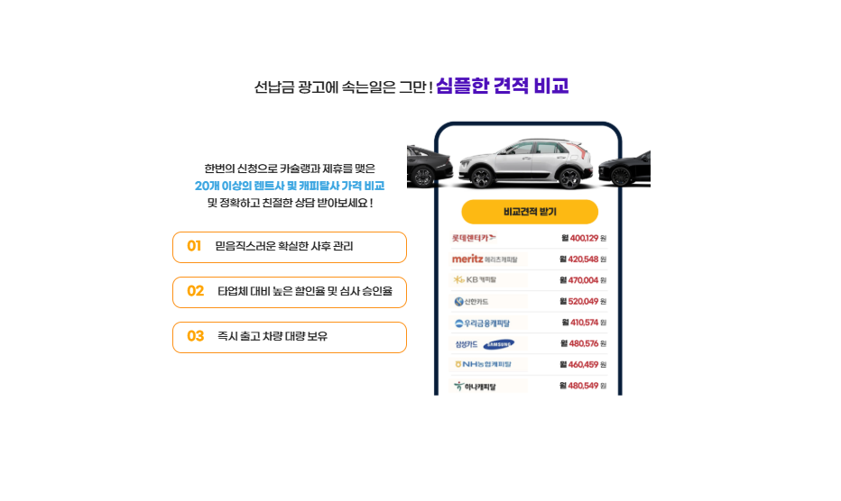
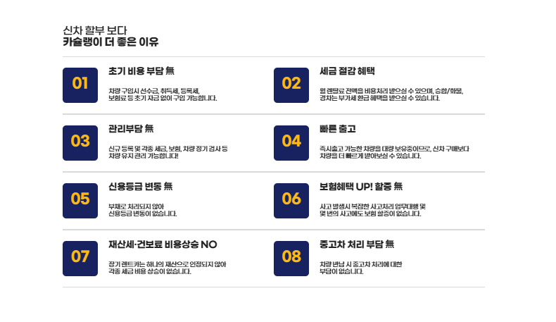
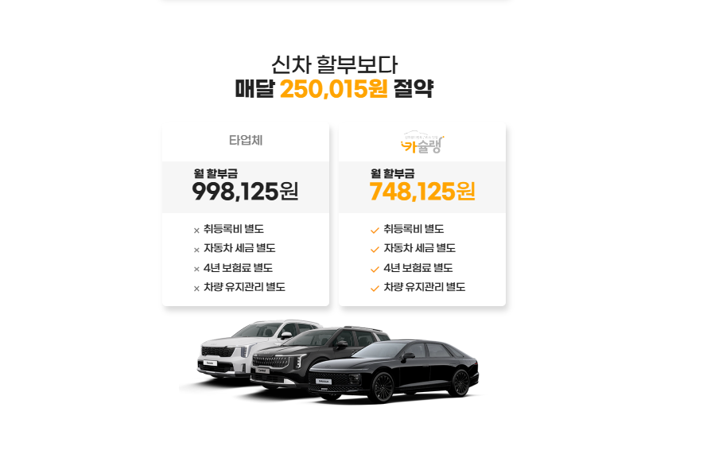

카슐랭을 통해 신차 장기렌트를 알아볼 때 가장 먼저 기억할 점은 가장 낮게 표시된 월 렌트료가 반드시 가장 저렴한 계약을 의미하지는 않는다는 것입니다. 선납금을 많이 넣어 월 납부액을 낮춘 견적과 무보증 견적은 초기 부담이 완전히 다르고, 연간 주행거리와 보험조건, 정비 포함 여부가 다르면 실제 이용비용도 달라집니다. 원하는 차종과 옵션을 정한 뒤 같은 조건으로 여러 견적을 비교해야 정확한 판단이 가능합니다.
카슐랭은 신차 장기렌트 비교견적과 상담을 알아보는 서비스입니다
카슐랭은 신차 장기렌트를 알아보는 이용자가 차종과 계약조건에 맞는 견적을 비교하고 상담을 신청할 수 있는 서비스입니다. 신차를 직접 구매하지 않고 일정 기간 렌터카 회사의 차량을 이용하면서 매월 렌트료를 납부하는 구조를 중심으로 살펴볼 수 있습니다.
실제 견적은 차량 모델과 세부트림, 옵션, 계약기간, 주행거리, 보증금 또는 선납금, 개인·개인사업자·법인 여부와 심사결과에 따라 달라질 수 있습니다. 따라서 광고에 표시된 대표 월 렌트료를 그대로 자신의 최종 견적으로 생각하기보다 같은 차량과 같은 계약조건으로 다시 확인하는 것이 중요합니다.

장기렌트는 차량을 소유하는 대신 계약기간 동안 이용료를 납부하는 방식입니다
장기렌트 차량의 명의는 일반적으로 렌터카 회사에 있으며 이용자는 계약기간 동안 월 렌트료를 납부하고 차량을 사용합니다. 자동차세와 보험료가 월 렌트료에 포함되는 구조가 많아 차량 구매 후 각각 납부하는 방식과 자금 흐름이 다릅니다.
이용자는 계약에서 정한 운전자 범위와 약정주행거리, 사고 시 자기부담금, 차량관리 의무를 지켜야 합니다. 계약이 끝나면 반납하거나 인수, 재렌트 등의 선택지를 검토할 수 있지만 모든 계약에서 선택조건이 동일한 것은 아닙니다.
차량 명의
일반적으로 렌터카 회사 명의로 등록됩니다.
월 납부방식
차량 이용료와 세금·보험 관련 비용이 반영될 수 있습니다.
계약기간
정해진 기간 동안 이용하고 중도해지 시 위약금이 발생할 수 있습니다.
계약 종료
반납·인수·연장 조건은 계약서에서 확인해야 합니다.
신차 구매·자동차 리스·장기렌트는 명의와 비용처리 방식이 다릅니다
| 구분 | 신차 구매 | 자동차 리스 | 신차 장기렌트 |
|---|---|---|---|
| 차량 명의 | 구매자 명의 | 리스회사 명의 | 렌터카 회사 명의 |
| 보험 | 개인이 직접 가입 | 계약에 따라 직접 가입하는 경우가 많음 | 렌터카 회사 보험조건 적용 |
| 자동차세 | 소유자가 납부 | 리스료에 반영될 수 있음 | 렌트료에 반영되는 구조가 많음 |
| 번호판 | 일반 번호판 | 일반 번호판 | 렌터카 번호판 사용 |
| 계약 종료 | 계속 보유 또는 매각 | 반납·인수 조건 확인 | 반납·인수·연장 조건 확인 |
어느 방식이 무조건 유리하다고 단정하기는 어렵습니다. 초기자금과 월 이용예산, 차량 보유기간, 연간 주행거리, 보험경력과 사업상 비용처리 필요성을 기준으로 비교해야 합니다.
월 렌트료는 차량가격 외에도 잔존가치와 계약조건의 영향을 받습니다
월 렌트료는 단순히 차량가격을 계약개월로 나눈 금액이 아닙니다. 차량가격과 옵션, 계약기간, 예상 잔존가치, 약정주행거리, 보험조건, 정비상품, 초기 납입금과 렌터카 회사의 조건 등이 종합적으로 반영될 수 있습니다.
보증금과 선납금은 모두 초기 납입금이지만 반환 여부가 다릅니다
보증금은 계약 이행을 담보하기 위해 예치하는 금액으로, 계약 종료 후 미납금이나 차량 손상 등을 정산한 뒤 반환될 수 있습니다. 반면 선납금은 월 렌트료 일부를 미리 납부하는 성격으로 월 납부액을 낮출 수 있지만 일반적으로 계약 종료 시 돌려받는 돈이 아닙니다.
| 구분 | 보증금 | 선납금 | 무보증 |
|---|---|---|---|
| 성격 | 계약보증을 위한 예치금 | 렌트료 일부 선지급 | 큰 초기 납입금 없이 진행 |
| 계약 종료 | 정산 후 반환 가능 | 일반적으로 반환되지 않음 | 반환할 초기금 없음 |
| 월 렌트료 | 조건에 따라 낮아질 수 있음 | 선납비율만큼 낮아 보일 수 있음 | 상대적으로 높게 제시될 수 있음 |
| 주의점 | 반환조건과 정산항목 확인 | 총비용에 반드시 포함 | 심사 승인 여부 확인 |
같은 차량이라도 선납금을 크게 넣은 견적은 무보증 견적보다 월 렌트료가 낮게 보일 수 있습니다.
계약기간이 길수록 월 부담은 낮아질 수 있지만 중도변경은 어려워집니다
장기렌트는 계약기간에 따라 월 렌트료와 잔존가치가 달라질 수 있습니다. 계약기간을 길게 잡으면 월 납부액이 낮아질 수 있지만 이직과 해외체류, 가족구성 변화 또는 차량 필요성 변화가 생겨도 계약을 중간에 해지하기 어렵다는 점을 고려해야 합니다.
차량을 몇 년 동안 사용할 것인지, 신차 교체주기가 어느 정도인지, 계약 종료 후 인수할 계획인지 반납할 계획인지 먼저 정하면 계약기간을 선택하기 쉬워집니다.
약정주행거리는 현재 사용량보다 조금 여유 있게 선택하는 편이 안전합니다
계약할 때 연간 또는 전체 약정주행거리를 정하게 되며, 계약 종료 시 실제 주행거리가 약정을 초과하면 추가 정산금이 발생할 수 있습니다. 출퇴근 거리와 주말 이용, 장거리 여행, 영업용 사용 여부를 합산해 실제 연간 주행량을 계산해야 합니다.
출퇴근 거리
왕복거리와 월 출근일을 기준으로 연간 거리를 계산합니다.
주말·여행
평소 생활주행 외 장거리 운행을 추가합니다.
업무용 운행
거래처 방문과 현장 이동거리를 충분히 반영합니다.
초과정산
1km당 초과금액과 약정변경 가능 여부를 확인합니다.
보험 포함이라는 말보다 운전자 범위와 사고 자기부담금을 확인하세요
장기렌트는 렌터카 회사의 자동차보험 조건이 적용될 수 있습니다. 이용자의 개인 자동차보험과 구조가 다를 수 있으므로 대인·대물 보장과 자차손해, 운전자 연령, 추가운전자 등록과 사고 시 자기부담금을 확인해야 합니다.
가족이나 직원이 함께 운전할 예정이라면 계약 전 운전자 범위를 넓혀야 합니다. 등록되지 않은 사람이 운전하거나 계약조건을 위반하면 사고 처리에서 불이익이 생길 수 있습니다.

정비 포함 상품은 편리하지만 어떤 소모품까지 지원되는지 확인해야 합니다
장기렌트 견적에는 정비가 포함되지 않은 기본형과 정기점검·엔진오일·소모품 교체 등을 포함한 정비형이 있을 수 있습니다. 정비상품을 선택하면 월 렌트료가 올라가지만 차량관리 일정을 직접 챙기기 어려운 이용자에게는 편리할 수 있습니다.
개인·개인사업자·법인은 이용목적과 회계처리를 구분해야 합니다
개인 이용자는 초기비용과 월 예산, 보험 편의성과 차량 교체주기를 중심으로 비교할 수 있습니다. 개인사업자와 법인은 업무용 사용비율과 비용처리, 운행기록과 세무처리 기준을 별도로 확인해야 합니다.
장기렌트료를 전부 비용처리할 수 있다고 단정하지 말고 차량 종류와 업무 사용 여부, 관련 세법과 회계처리를 세무전문가에게 확인하는 것이 좋습니다.
중도해지 위약금은 남은 렌트료와 계약시점에 따라 커질 수 있습니다
장기렌트는 장기간 이용을 전제로 월 렌트료가 계산되므로 계약 중간에 해지하면 위약금이 발생할 수 있습니다. 위약금 산식은 렌터카 회사와 상품에 따라 달라질 수 있으며, 계약 초기일수록 부담이 클 수 있습니다.
계약승계는 렌터카 회사의 승인과 새 이용자의 심사가 필요할 수 있고 승계수수료도 확인해야 합니다.
계약 전에 예상보다 일찍 차량이 필요 없어질 가능성이 있는지, 해외근무나 이직 계획이 있는지 확인하세요. 중도해지와 승계조건을 미리 알아두면 계약기간을 무리하게 길게 잡는 실수를 줄일 수 있습니다.
계약 종료 시 반납과 인수 중 어느 쪽이 유리한지 다시 계산합니다
계약 종료가 가까워지면 차량을 반납할지, 약정된 금액으로 인수할지, 새 차량으로 다시 계약할지 결정할 수 있습니다. 인수를 고려한다면 인수금액과 취득 관련 비용, 같은 연식 중고차 시세와 차량 상태를 비교해야 합니다.
카슐랭 견적은 차종과 옵션, 계약조건을 동일하게 맞춰 비교하세요
비교견적을 받을 때는 단순히 “중형 SUV 견적”이라고 요청하기보다 제조사와 모델, 트림, 연료방식, 외장색상과 선택옵션을 구체적으로 정해야 합니다. 계약조건도 기간과 주행거리, 보증금·선납금, 정비와 운전자 범위를 동일하게 맞춰야 정확한 비교가 가능합니다.
| 비교항목 | 견적서에서 확인할 내용 |
|---|---|
| 차량정보 | 연식·트림·옵션·색상과 출고 가능시점 |
| 초기비용 | 무보증·보증금·선납금과 반환 여부 |
| 월 납부액 | 부가세와 보험·정비 포함 여부 |
| 이용조건 | 계약기간·약정주행거리·운전자 범위 |
| 종료조건 | 인수금액·반납정산·중도해지 위약금 |
카슐랭 장기렌트 상담 전 마지막으로 확인하세요
